RMS Titanic: Machine Learning from Disaster
\newpage
1 Preface
In this paper we will have a look at the passengers on board of the Titanic. We will try to find the characteristics of people who were most likely to survive the disaster using machine learning techniques. Using these characteristics, we will make a prediction whether passengers have survived or not. The goal of this paper is not to make predictions about the future or about disasters in general. The results of our research can teach us something about the circumstances during the time that the Titanic sank. The passengers all played a different part in society back in those days. It teaches us something about the civilization at the time.
Moreover, this paper is written because I wanted to learn something about machine learning and programming using Python. I want to study engineering at TU Eindhoven. It will come in handy if I already know a thing or two about programming in Python. Python is a programming language that is becoming more and more popular for things like data analysis and I am certain that I will use it more often in the future.
I would like to give a special thanks to the following people. My father, who has helped me learn programming in Python and has taught me the basics of machine learning. Thank you for believing in me. Likewise, I would like to thank my supervisor mr. Kampwart for being enthusiastic and keeping me motivated. Lastly, I wanted to give thanks to DataCamp for providing me with courses on programming in Python and to Kaggle.com for the dataset of the Titanic.
\newpage
Table of Contents
\newpage
2 Introduction
The RMS Titanic was the largest ship on water during that time and it was the second of three ocean liners operated by the White Star Line.1 The ship consisted of nine decks: the boat deck, seven decks labelled from A to G which carried the passengers and the Orlop Deck which was below the waterline. The liner had a height of 175 feet and a breadth of 92 feet.2
In the year 1912 on the 15th of April one of the most infamous ships in history would crash into an iceberg and sink in the North Atlantic Ocean. During its maiden voyage from Southhampton to New York City on the 14th of April at 11:40 p.m. ship's time, the lookout sounded the alarm when a massive clump of solid ice caught his attention. The first mate had seen the iceberg before the lookout did and tried to turn the ship around. Unfortunately, he was too late. Forty seconds later at a high speed the Titanic collided with a huge rock made of ice with a weight of 30 million kilograms. The collision caused a series of holes along the side of the hull.3 Six of the watertight compartments were filled with water, whereas the ship could only sail on with a maximum of four compartments flooded. Consequently, the Titanic was doomed to sink. The crew understood they needed to act fast. They deployed the evacuation program. The ship carried twenty lifeboats. In principle the protocol "women and children first" was followed. However, this did not apply equally for everyone on board. The chance of being saved was dependent on the class in which one travelled and the place where one found oneself during the evacuation. Around 2:20 a.m. parts of the Titanic broke off and sunk with one thousand people still on board. On deck were some of the richest people in the world, movie stars, school teachers and immigrants, who were hoping to find a new life in New York City. A life that some of them would never find. Two hours after the ship sank, the liner RMS Carpathia arrived and saved an estimated 705 people.4 The sinking of the RMS Titanic killed 1502 out of the 2224 people on board, crew members as well as passengers.5

Figure 2: Profile of RMS Titanic with the decks indicated
The Titanic may be one of the most iconic ships in history, its story known the world over.6 The tragedy has led to better safety regulations for ships and inspired numerous expeditions, movies, books, plays and characters.
Many passengers have lost their lives due to the fact that there were not enough lifeboats. Luck played a part in surviving this disaster. Moreover, some groups had an advantage compared to other groups. For instance, the "women and children first" policy left a relatively larger number of (older) men aboard. Similarly, speculations can be made regarding the advantage of the elderly aboard the Titanic. On the one hand it seems logical that the seniors were helped to the lifeboats because of a policy similar to the one about women and children. Older people are not as physically fit as the rest of the passengers, therefore they need to be assisted. On the other hand however, were the elderly the ones left behind as a result of their physical condition. They would have had more trouble climbing from the lowest deck to the boat deck. Finally, some people travelling first class might have had a better chance at surviving as well. The passengers were able to choose between three classes, varying in price and comfort. There was also a correlation between these three classes and wealth and social class. Most of the people travelling first class were, for example, businessmen, politicians and bankers. Second class travellers included professors, authors and tourists, members of the middle class. Emigrant workers moving to the United States and Canada travelled third class. In general, people travelling first class were closer to the boat deck and had, therefore, more chance to escape the flooding of the cabins (see Figure tab:titanicdeckplanone and Figure tab:titanicdeckplantwo). They could get to the life boats faster than people whose cabins were on one of the lower decks. The price paid for a ticket is correlated with class. Tickets for travelling first class were in general more expensive than tickets for travelling second or third class.

Figure 3: Deckplan of the Titanic

Figure 4: Deckplan of the Titanic
In this paper we will take a look at the characteristics of people who were more likely to survive the demise of the Titanic with the help of machine learning. We will predict the chances of survival of certain groups of passengers. In addition, we will see whether our expectation that children, women and rich people had an advantage indeed is correct.
2.1 Machine Learning
For the past 15 years, scientists have tried to make computers learn new things from given data with the help of machine learning. The definition of machine learning given by a professor at Stanford University is as follows: "Machine learning is the science of getting computers to act without being explicitly programmed."7 It consists of giving computers the ability to learn and make decisions from data. These machine learning techniques are used to build predictive models. To illustrate, we will discuss some examples.
First, consider spam emails that are sent to everyone who has an emailaccount. Whether the email is from a lottery telling you you have won a $1-million prize or from an unknown travel-agency offering you a trip to an exclusive resort for little money. It does not matter what the email looks like, your computer is able to distinguish the spam from your usual emails and places the spam in the spam folder of your account. The computer can detect the elements of spam, find patterns and compares the found patterns to new mail. Spam tends to have characteristic elements such as spelling mistakes, an originating address in Nigeria or claims that it needs your bank information. Second, huge tech giants such as Google, Netflix and Spotify use machine learning. The algorithms of these firms offer recommendations and suggestions based on previous user searches, movies watched and songs listened to, exactly because they can recognise a pattern in these cases.8 Maybe one of the best known examples is AlphaGo. The computer programm developed by Google DeepMind in London to play the the boardgame Go.9 In October 2015, AlphaGo became the first computer Go program to beat a human professional Go player. It was trained on moves of expert players from recorded historical games, a database of around 30 million moves. The algorithm used these moves to mimic human play by attempting to match these moves. Moreover, machine learning is making a breakthrough in the medical field as well. Artificial Intelligence (AI) pioneer Regina Barzilay carried out research and is now teaching machines to hunt down cancer. Experienced doctors have only a limited amount of patients' experience. Curing cancer is now more a trial-and-error process. With the help of machine learning people can be diagnosed faster and can be cured with the appropriate treatment.10
A lot of different machine learning techniques exist. In this paper we will discuss two examples.
2.2 Different types of Machine Learning
Machine learning can be divided in roughly three categories: reinforcement, unsupervised and supervised learning. The latter two will be discussed but we ignore here reinforcement learning. We ask ourselves the questions how does the computer know it is getting better or not, and how does it know how to improve? Different answers to these questions lead to different types of machine learning techniques; see Figure tab:types.

Figure 5: An illustration of the different types of machine learning
Unsupervised learning This is a version of machine learning where the computer has to uncover patterns from unlabeled data. Correct labels are not provided. The algorithm has to identify similarities between the inputs. This way the inputs that have something in common are categorised together.11
For instance, grouping customers in categories based on buying behaviour without knowing in advance what these categories might be.
Supervised learning The majority of machine learning uses supervised learning and this is what we will be using as well. Whereas unsupervised learning has to make decisions from data that is not labeled (the correct responses are not provided), supervised machine learning deals with labeled data. The correct answers are already provided in the data. The algorithm generalises to respond correctly to all possible inputs, based on this training. The computer is provided with a specific input combined with the correct output or prediction. This way, the machine is trained to see the connections between the input and the right output. When a computer has had enough training or has been provided with enough data points, it will make less mistakes with every try.12
The Titanic task is an example of supervised learning. We know who has survived the disaster and who has not. This way we can train our computer on the dataset. Consequently, the computer learns to connect particular variables to the fact if someone has survived or not. Given a new person, of whom we don't know if he or she has survived it, the computer can make a prediction. We can produce the chances of survival for particular variables, e.g. gender, class etc. The goal is to predict the target variable, in this case 1 or 0 representing survived or not survived respectively in our Titanic dataset, given the predictor variables, such as class, gender, age, siblings etc.
We can distinguish two different types of supervised learning:
- Classification: the target variable consists of categories. Predicting survival on the Titanic is a classification problem. We have to classify, based on our predictor variables, if a person belongs to the class of survived (1) or not survived (0). This is called binary classification.
- Regression: the target variable is continuous. For instance, a dataset containing housing price data like the year the house was built, number of bedrooms, acreage. There is a price associated with each house. The goal is to predict the price of a house, given these variables. Since price is a continuous variable, this problem is an example of regression.
2.3 Algorithms
To illustrate supervised machine learning, we use two different algorithms. Training our model on the data using an algorithm is called 'fitting' a model to the data. Fitting means minimizing the classification mistakes that we make.
We split our data into a training and test set. We fit our model to the training data and predict on the test set. We do this in order to prevent the problem of overfitting. Overfitting means that our computer finds patterns in the data which are valid in our dataset but not representative for the population as a whole. So how does splitting our dataset solve this problem? We let our computer predict on the dataset it has never seen before, i.e. the test set. This way we can see whether our model fitting on the training set leads to overfitting on the test set.
A second problem that can occur is underfitting. This means that the model misses patterns that are actually present in the data. We have to find a balance between this over- and underfitting.
2.3.1 KNearestNeighbors
To begin with, we use the so-called KNearestNeighbors algorithm. It predicts a label of a datapoint by looking at the 'k' closest labelled data points. KNN takes a majority vote on what label an undecided point has to have. For instance, when we want to decide if a dot on the map in Figure tab:knn is a blue square or a red triangle, we can choose our 'k' as 3. With choosing our 'k', we create a set of decision boundaries. Our computer will look at the three closest datapoints to classify our undecided point. If two or more of those three are blue squares, it classifies our undecided point as a blue square. If two or more of those three points are red triangles, it classifies our undecided point as a red triangle. The trick is to choose the right value for 'k'. Choosing too large a value for 'k', leads to underfitting. This creates a smoother decision boundary. To see this, imagine that 'k' equals \(n-1\), where \(n\) denotes the number of observations. Then, everything becomes one and the same colour. This way we have a less complex model, because our algorithm generalizes too much and uses too little information. On the other side, choosing too small a value for 'k' leads to overfitting. Consequently, our model is more complex and creates a more erratic boundary between different labels. We use 'too much' information and our model becomes less reliable. Finding the right 'k' is a combination of using other algorithms to find 'k' and trial-and-error.13
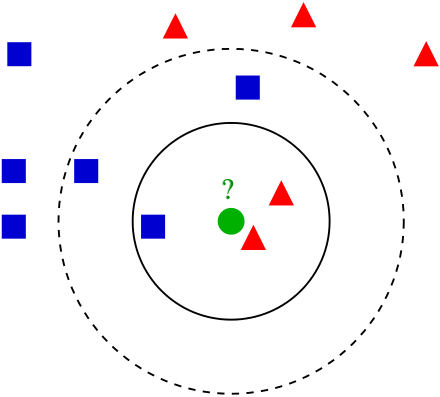
Figure 6: Illustration of the algorithm called KNearestNeighbors
2.3.2 Logistic regression
Second, we use an algorithm called logistic regression (logreg). The name can be misleading because logreg is commonly used for classification problems, not regression. It outputs probabilities. For example, if the dataset consists of \(n\) different classes, the algorithm calculates the chance that one specific case is classified as belonging to one of these \(n\) classes. With the Titanic data, we have \(n=2\). Therefore, we are dealing with a binary classification problem.14 This implies the following: if we find \(p>0.5\), the variable is classified as 1, the passenger has survived the disaster; when we see \(p<0.5\), it is classified as 0, the passenger has not survived.
To explain the principle of logistic regression, we will have a look at a linear function first:
\begin{equation} y=ax+b \end{equation}In this case there is only one predictor variable, \(a\) and \(b\) are the parameters of our model. We want to fit a line to the data. Fitting, in this case, consists of choosing a slope \(a\) and an intercept \(b\). Our Titanic dataset has more than one feature, because we have more than one predictor variable. Using linear regression, our line will look something like this, where each \(x_i\) represents a different predictor variable.
\begin{equation} y=a_1x_1+a_2x_2+ \dots + a_nx_n+b+\varepsilon \end{equation}By calculating the vertical distance between each data point and the line, we can get an impression of how accurate our model is. This distance is called the residual (\(\varepsilon\)). One option is to minimze the sum of the residuals. However, this will not work because large positive values will cancel out large negative values. Consequently, shifting the line upwards will always reduce the sum of the residuals making the sum of the residuals \(-\infty\), which is the lowest value possible. So, to make sure that our line is as close to the actual data as possible, we calculate the sum of squared residuals (see Figure tab:ols and see Equation \ref{eq:residual}). This is called Ordinary Least Squares (OLS). When we call fit on our logistic regression model in scitkitlearn, it performs this OLS under the hood. Scikitlearn is a popular machine learning library for Python, which we will use to train our computer (see Footnote \ref{fn:datacamp}).
\begin{equation} \label{eq:residual} \sum_{i=1}^{n}\varepsilon^2_{i} \end{equation}
Figure 7: Ordinary Least Squares: Minimize sum of squares of residuals
The red lines in Figure tab:ols represent \(\varepsilon_{i}\). We use logistic regression, because our target variable is not continuous: our variable is either 0 or 1. The logistic function \(\sigma(y)\) is defined as follows:
\begin{equation} \label{eq:2} \sigma(y) = \frac{e^y}{1+e^y} \end{equation}Because we have three variables(i.e. age, gender and class), \(y\) in this case is of the form:
\begin{equation} y=a_1x_1+a_2x_2+a_3x_3+b+\varepsilon_{i} \end{equation}The function in equation eq:2 is a sigmoid function (see Figure tab:log), which takes any real input \(y\) (\(y\in{\rm I\!R}\)), and outputs a value between zero and one; a probability.

Figure 8: The logistic function
The underfitting and overfitting problem also applies to logistic regression. Adding more independent variables to our model increases the explained variance. Our model becomes more complex, as mentioned earlier. Using too few independent variables results in underfitting, where our model is too 'simple'.
After using these two algorithms, we measure model performance. To do this, we use metrics such as accuracy. Accuracy is the fraction of correct predictions, think of the fraction of cases where the model correctly predicts that someone survived. How these metrics work, will be explained below.
To sum up, we follow this procedure: We split our dataset into a training set and test set. Then we fit or train the classifier to the training set. Subsequently, we predict on the test set. In the end, we compare our predictions to the known labels and compute a metric of accuracy.
\newpage
2.4 Main questions and sub-questions
This research is motivated by the following main question and sub-questions:
Main question
Is it possible to make an accurate prediction whether the passengers on the Titanic survived the disaster or not using information about gender, class, age and fare?
Sub-questions
- What is the influence of gender on the chance of surviving after the Titanic had sunk?
- What is the influence of fare on the chance of surviving?
- What is the influence of class on the chance of surviving?
- What is the influence of age on the chance of surviving?
These questions lead to the following hypotheses:
- Main question : Yes this is possible, with the help of machine learning using the algorithms KNearestNeighbours and logistic regression.
- Sub-questions :
- The survival rate of women is higher than the survival rate of men.
- The survival rate of passengers who paid a higher fare is higher than those who paid less.
- The survival rate of passengers who were travelling in a lower class (in this case first class is seen as lowest) is higher.
- The survival rate of children and elderly is higher than the survival rate of the adults.
\newpage
3 Preparation
3.1 A first look at the dataset
This adventure begins with importing a number of packages. We will use other packages as well, which we import along the way.
import numpy as np import pandas as pd import matplotlib.pyplot as plt import seaborn as sns
The dataset is downloaded from Kaggle15 as csv_file. Thereafter, the data is read into a dataframe by using pandas pd.read_csv.
data = pd.read_csv('titanic.csv')
Before we get started with our algorithms, we will have a look at our dataset. We perform some numerical Exploratory Data Analysis (EDA). This helps us analyse our dataset by giving a first impression of the data.
Using the .head() method, we can see the first five rows of our dataset in Table tab:table1. A couple of questions come to
mind. Which variables play a role determining the probability of surviving the Titanic? As mentioned we are interested in gender but Sex is not a numeric value. How do we convert this in a way that our computer can deal with this variable?
data.head()
We have thirteen columns. Pass gives us the PassengerId. Surv shows us a 0 or 1, which stands for not survived and survived respectively. SibSp represents the number of siblings and Parch represents the number of parents of the passenger on board. Emb tells us the port of embarkation: C stands for Cherbourg, Q for Queenstown and S for Southampton. With the .describe() method we get the summary statistics of the numeric variables. The mean, standarddeviation etcetera are given in Table tab:table2.
data.describe()
In Table tab:table2, a couple of values stand out. The mean of Survived for example is 0.38. This indicates that 38% of the passengers on board has survived. Furthermore, the average age of people on board was around thirty years. The median age is twenty-eight and the eldest aboard was eighty years old. The maximum number of siblings on board of a passenger was 8 (family holiday!). We see that the maximum numbers of parents (Parch) on board is 6, which seems a bit odd… Since we do not use this variable anyway we will not worry about it. Finally, the average Fare was 32 pounds.
It is also possible to search for particular passengers in the dataset. Such as passengers with a particular name or with a particular age of say eighty years.
data[data.Name == 'Braund, Mr. Owen Harris']
PassengerId Survived Pclass Name Sex Age SibSp \ 0 1 0 3 Braund, Mr. Owen Harris male 22.0 1 Parch Ticket Fare Cabin Embarked 0 0 A/5 21171 7.25 NaN S
| PassengerId | Survived | Pclass | Name | Sex | Age | SibSp | Parch | Ticket | Fare | Cabin | Embarked | |
|---|---|---|---|---|---|---|---|---|---|---|---|---|
| 0 | 1 | 0 | 3 | Braund, Mr. Owen Harris | male | 22.0 | 1 | 0 | A/5 21171 | 7.25 | NaN | S |
data[data.Age == 80]
PassengerId Survived Pclass Name \
630 631 1 1 Barkworth, Mr. Algernon Henry Wilson
Sex Age SibSp Parch Ticket Fare Cabin Embarked
630 male 80.0 0 0 27042 30.0 A23 S
| PassengerId | Survived | Pclass | Name | Sex | Age | SibSp | Parch | Ticket | Fare | Cabin | Embarked | |
|---|---|---|---|---|---|---|---|---|---|---|---|---|
| 630 | 631 | 1 | 1 | Barkworth, Mr. Algernon Henry Wilson | male | 80.0 | 0 | 0 | 27042 | 30.0 | A23 | S |
It is also possible to see who has paid more than 400 dollars for his or her ticket. We see that it is easy to make a selection in our dataset using the > sign.
data[data.Fare > 400]
PassengerId Survived Pclass Name \
258 259 1 1 Ward, Miss. Anna
679 680 1 1 Cardeza, Mr. Thomas Drake Martinez
737 738 1 1 Lesurer, Mr. Gustave J
Sex Age SibSp Parch Ticket Fare Cabin Embarked
258 female 35.0 0 0 PC 17755 512.3292 NaN C
679 male 36.0 0 1 PC 17755 512.3292 B51 B53 B55 C
737 male 35.0 0 0 PC 17755 512.3292 B101 C
| PassengerId | Survived | Pclass | Name | Sex | Age | SibSp | Parch | Ticket | Fare | Cabin | Embarked | |
|---|---|---|---|---|---|---|---|---|---|---|---|---|
| 258 | 259 | 1 | 1 | Ward, Miss. Anna | female | 35.0 | 0 | 0 | PC 17755 | 512.3292 | NaN | C |
| 679 | 680 | 1 | 1 | Cardeza, Mr. Thomas Drake Martinez | male | 36.0 | 0 | 1 | PC 17755 | 512.3292 | B51 B53 B55 | C |
| 737 | 738 | 1 | 1 | Lesurer, Mr. Gustave J | male | 35.0 | 0 | 0 | PC 17755 | 512.3292 | B101 | C |
Next we perform some visual EDA. We do this in order to have a look at possible correlations between variables and at how our data is distributed. We can make a couple of plots using the matplotlib.pyplot and seaborn packages. We need to keep in mind that these plots show correlations, not causality.
Let's start with plotting Age against Survived. The result is Figure tab:agesurvived. Survived is not a continuous variable, so we see two strokes of dots. Looking at the plot, we can conclude that there was someone of eighty who has survived.
plt.scatter(data.Age,data.Survived) plt.xlabel('Age') plt.ylabel('Survived') plt.savefig ('AgeSurvived.png')
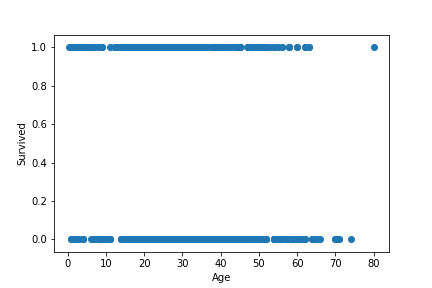 Now we have a look at the relationship between class and price paid for a ticket in Figure tab:classfare. It is likely that we will see some correlation. The line relating to first class has higher values than the ones relating to second and third class. Below we write the same code for plotting the scatter plots. We will not, however, show the code everytime because this would make it less readable. Hence first class tickets tend to be more expensive than second and third class tickets.
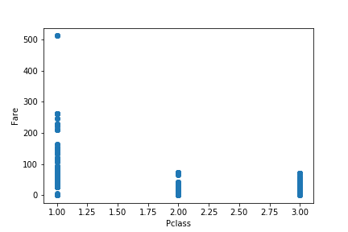
Figure 9: Plot of Class against Fare
A couple of values stand out. We see that a passenger or more passengers travelling first class have paid more than 500 pounds for their ticket.
After we have plotted Fare against Survived, we take a look at Figure tab:faresurvived.
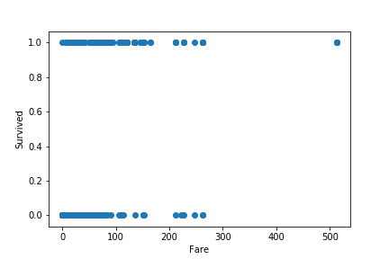
Figure 10: Plot of Fare against Survived
Between Fare and Age we can conclude that passengers younger than ten years have not paid a lot for their ticket as opposed to other passengers (see Figure tab:fareage). People who paid more for their tickets were older. But not everyone who was older, has paid more for their tickets.
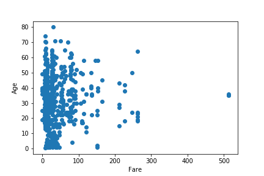
Figure 11: Plot of Fare against Age
If we plot a scatter matrix with the variables Class, Fare and Age, we get Figure tab:scattermatrix.
\newpage
from pandas.plotting import scatter_matrix axs = scatter_matrix(P_titanic[['Pclass','Fare','Age']], alpha=0.2, figsize=(10, 10), diagonal='hist') plt.savefig('scatter.png')
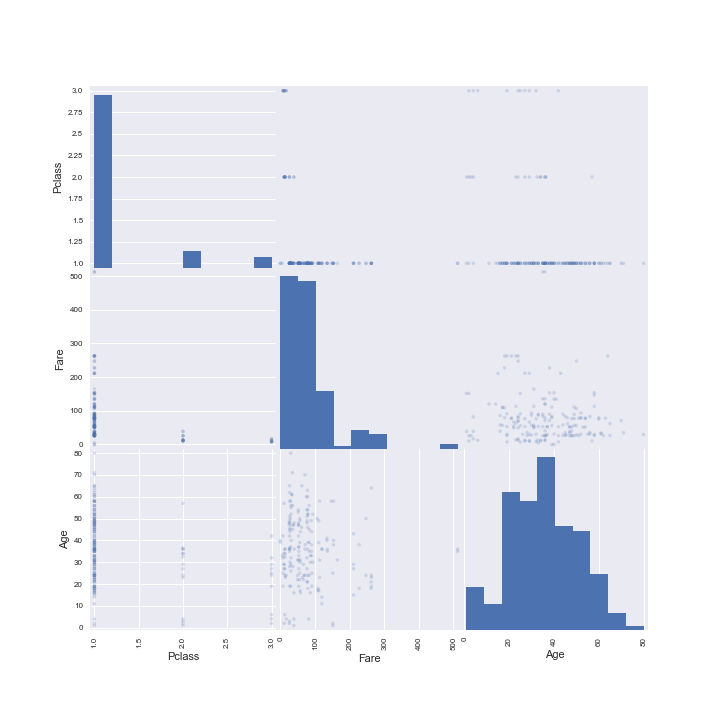
Figure 12: Scatter matrix with histograms on the diagonal
Diagonal scatter matrix
The scatter matrix plots all the combinations of our variables in the scatter plots. This gives us an overview. On the diagonal we see a histogram that represents the relative distribution of the variables. Looking at the histogram for Age for example, it shows how many people of each particular age group were on the Titanic.
We plot a binary Seaborn Counplot. Plotting Class against Survived, we can see that there were more people in the third than in the first class. This makes it difficult to compare them to each other. One option is to calculate percentages. In general, we cannot draw a conclusion regarding survival probabilities. In the third class, more passengers died than survived. In the first class, more people survived than perished. The plot only shows us one variable. This is another reason why we cannot directly see the influence of class on the chance of survival. The effect of first class on the chance of survival can be different for a woman than for a man for example and men and women may not be distrubuted equally over the classes. This is because the variables have an influence on eachother as well. We will have a further look at this problem in the Discussion.
sns.set(style="darkgrid") ax = sns.countplot(x="Pclass",hue="Survived", data=data, palette="Set3")

Here we see a plot with Age against Survived. We can see some blue points for the passengers of a younger age. Furthermore, a lot of people of middle age have not survived. This is caused to some extent by the fact that there were more passengers of middle age on board.
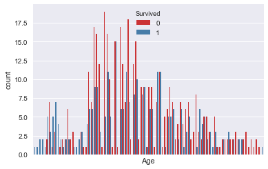
Here we see a plot of our male_dummy. False represents in this case the women on board of the Titanic. We see that there were more women who have survived than women who did not. True stands in this case for the men on board. We see that more men have perished than survived. One interpretation is that the "women and children first" policy was followed.
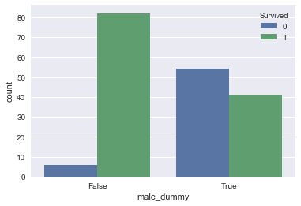
In the Appendix we provide more plots.
3.2 Preprocessing techniques
Now we have explored our dataset and have seen what it looks like, we make the following adjustments. These are called "preprocessing techniques". The package scikitlearn cannot work with non-numerical values like the values of Sex. We turn this into a male dummy. Moreover, for some observations variable values are missing. To ease the exposition we drop these observations.
df_cleaned = data.dropna() df_cleaned['male_dummy'] = (df_cleaned.Sex == 'male') X = df_cleaned[['Age','male_dummy', 'Pclass', 'SibSp', 'Fare']] y = df_cleaned[['Survived']]
We "clean" our dataset for the first time to make it more suitable for
the packages we will be using. All rows with missing values, these are called
NaNs (this is short for Not a Number), are deleted. We delete these by using
.dropna(). There are other ways than deleting rows to handle this problem.
Such as, replacing the NaNs with the mean or interpolating. However, the
choice was made this time to delete these rows. Furthermore, we see that the
problem of the Sex column not being a numeric value is handled. The values
in the Sex column are changed into a boolean. A boolean is a datatype with
only two possible values, i.e. True or False. Males are given a True (1) and
the females are given a False (0). Next we have added a couple of variables
to X: Age, male_dummy, Pclass, SibSp and Fare. These are all numeric
values and therefore easy to use.
Here we see the cleaned dataframe in Table tab:tabledfcleaned with the new added column male_dummy.
In this paper we will only have a look at the variables Age, Sex, Class and Fare, because we are interested in the effects of age, gende and wealth in the society of 1912. To simplify the dataset, we delete the columns with data we will not use. This new dataset is called P_titanic. The first five rows of this new dataset are given in Table tab:ptitanichead.
P_titanic = df_cleaned[['Pclass', 'Fare', 'Age', 'male_dummy']]
P_titanic.head()
The corresponding column with the information about who has survived and who has not survived is called q_titanic and is given in Table tab:qtitanichead.
q_titanic = df_cleaned.Survived
q_titanic.head()
We see that numbers 2, 4, 5 etcetera are missing. This makes sense because we have deleted rows with missing values.
Using this data it is possible to make a graphic illustration of a prediction. We select the data concerning three of our variables, including the variable Survived, which we want to predict.
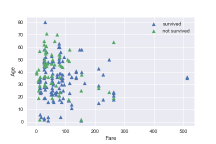
Figure 16: Survived of Fare vs. Age
Here we see a graphic illustration of the relation between Fare, Age
and Survived. The relation is not very clear but we see that the higher the fare the more people survived and the higher the age the less people survived. However, we are also interested in the effect of gender and class. It is not possible to draw a reliable conclusion from this plot.
It is inconvenient to plot discrete variables such as Class and Age. It is harder to distinguish how many blue and green triangles there are in the plot. In the Appendix we provide more plots.
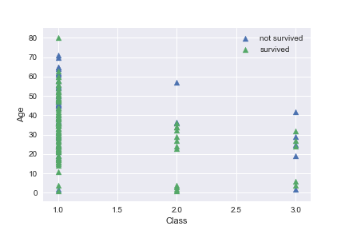
Figure 17: Survived of Class vs. Age
\newpage
4 Fitting models
4.1 The first algorithm: KNearestNeighbors
One way to approach our problem is using the algorithm called KNearestNeighbors (KNN). We import the classifier from the library sklearn.neighbours.
from sklearn.neighbors import KNeighborsClassifier
We choose 6 neighbors. In KNN finding the value of \(k\) is not easy. A small value of k means that noise will have a higher influence on the result and a large value makes it computationally expensive. We will not spend a lot of time on finding the right \(k\) for the reason that the emphasis of this paper is on getting a general idea of how the algorithms work.
knn = KNeighborsClassifier(n_neighbors=6)
We split our data into a training set and a test set. The arguments allow us to specify the size of our training and test set. This and the parameters will be varied to see which values gives the best prediction. We find that our model performance is dependent on the way our data is split. If we choose our test size to be 0.2 and we compute our accuracy score, we get the following:
from sklearn.model_selection import train_test_split P_titanic_train, P_titanic_test, q_titanic_train, q_titanic_test = \ train_test_split(P_titanic,q_titanic, test_size=0.2, random_state=42)
We fit our classifier on the training set and consequently predict on the test set.
knn.fit(P_titanic_train, q_titanic_train) prediction= knn.predict(P_titanic_test)
If we compute our accuracy score, which is the fraction of correct predictions, we find the following value:
knn.score(P_titanic_test, q_titanic_test)
0.7027027027027027
Which means that about 70% of our prediction are accurate.
If we print our prediction, this is what it looks like:
print('Prediction{}'.format(prediction))
Prediction[1 1 1 0 1 0 1 1 1 1 0 1 0 1 1 1 1 0 1 1 1 1 0 1 0 1 1 1 1 0 1 1 0 1 1 1 1]
This is a prediction for the first 38 passengers with his or her specific characteristics. If we take a look at the head of our P_titanic_test (Table tab:tableptest), we can see for whom the algorithm has predicted that he or she has survived. The third '1' corresponds with the passenger number 742 on the list.
So number 742 has, according to our model, survived the disaster. The PassengerID of this passenger is 743, because the ID is one higher than the row number.
df_cleaned[df_cleaned.PassengerId == 743]
PassengerId Survived Pclass Name \
742 743 1 1 Ryerson, Miss. Susan Parker "Suzette"
Sex Age SibSp Parch Ticket Fare Cabin Embarked \
742 female 21.0 2 2 PC 17608 262.375 B57 B59 B63 B66 C
male_dummy
742 False
| PassengerId | Survived | Pclass | Name | Sex | Age | SibSp | Parch | Ticket | Fare | Cabin | Embarked | male_dummy | |
|---|---|---|---|---|---|---|---|---|---|---|---|---|---|
| 742 | 743 | 1 | 1 | Ryerson, Miss. Susan Parker "Suzette" | female | 21.0 | 2 | 2 | PC 17608 | 262.375 | B57 B59 B63 B66 | C | False |
Miss Ryerson has survived! Congratulations Suzette! And congratulations to our model which correctly predicted her survival.
Back to varying our test size. If we choose a value of 0.4 for our test size, we get a slightly different outcome.
P_titanic_train, P_titanic_test, q_titanic_train, q_titanic_test = \ train_test_split(P_titanic,q_titanic, test_size=0.4, random_state=42) knn.fit(P_titanic_train, q_titanic_train) prediction= knn.predict(P_titanic_test) knn.score(P_titanic_test, q_titanic_test)
0.6756756756756757
print('Prediction{}'.format(prediction))
Prediction[1 1 1 0 0 0 1 1 1 0 0 1 1 1 1 1 1 1 1 1 1 1 1 1 1 1 1 0 1 1 1 1 0 0 1 1 1 1 1 1 1 0 1 0 0 1 0 1 1 1 1 1 0 1 0 0 1 1 0 1 0 1 0 1 1 0 1 1 1 1 1 0 0 1]
A larger test set gives us a lower accuracy score, probably because we have a smaller training set. However, the accuracy score is not always reliable. See the Discussion below for an explanation. It is not obvious which size gives the best result. We will use a test size of 0.2 for KNN and one of 0.25 for logistic regression.
Now we introduce two methods to better evaluate the performances of our model. To prevent that our results are influenced by one particular way of splitting our data, we perform a technique called cross-validation. We ask ourselves the question: Do we see these results because we have accidentally chosen a very specific part of the data as our test set? Or is this a representative result of our entire dataset? This uncertainty can influence the reliability of our outcome. Using cross-validation we split our data into \(k\) folds and let our computer perform the algorithm \(k\) times on \(k\) different but equally large selections of our data of test and training sets. To illustrate, if we choose \(k\) is 5 we perform 5-fold cross-validation (see Figure tab:5-foldcross). Note, we are not gaining more accuracy with this technique for we are not using more data. The dataset stays the same. We get a better idea where our results come from.
We use five different parts of our data as test set and the rest of the data as training set.
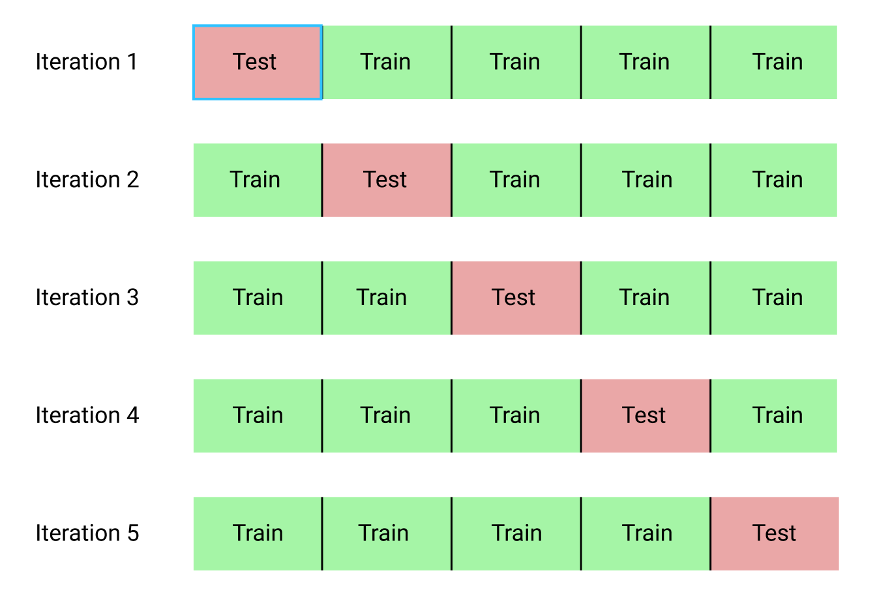
Figure 18: 5-fold cross-validation
First, we split our data into five groups. We hold out the first fold as a test set, fit our model on the remaining four groups and we then predict on the first fold. In the next fold we use the second block as test set and fit on the remaining data and so on. Working with more folds is more computationally expensive and thus taking the computer longer to perform the cross-validation.
To get an idea about how this cross-validation (cv) works, we perform cv with 5 folds.
from sklearn.model_selection import cross_val_score cv_scores = cross_val_score(knn, P_titanic, q_titanic, cv=5, scoring='roc_auc') print(cv_scores)
[0.41666667 0.48833333 0.53833333 0.5 0.50694444]
Here we see five values of \(R^{2}\) which is a statistical measure of how close the datapoints are to the fitted regression line. It is also known as the coefficient of determination.16 0% indicates that the model explains none of the variability of the response data around its mean, whereas 100% indicates that the model explains all the variability of the response data around its mean. For each of the different folds, we find that \(R^2\) is around 0.5. Hence, the particular fold chosen does not affect our results. Because if it did, we would have found for instance values of 0.1 next to values of 0.9.
To get an idea what the influence is of different sizes of cross-validation on our score, we perform another cross-validation in the Appendix.
The second method to evaluate our model's performance is the so-called confusion matrix. The confusion matrix is a table with four different combinations of predicted and actual values. The name stems from the fact that it makes it easy to see if the system is confusing two classes.17 The four different combinations are: true positive (TP), true negative (TN), false positive (FP) and false negative (FN). The table has two dimensions: "actual" and "predicted". TP indicates that the algorithm predicted positive and that it was right. So this is a correct prediction that the passenger has survived. TN says that the algorithm predicted negative (so the passenger did not survive) and that the prediction was true. FP: the algorithm predicted positive but it is false. FN means that the algorithm predicted negative but was not right. For an example for the prediction of spam emails in a confusion matrix, see Figure tab:matrix (borrowed from DataCamp).
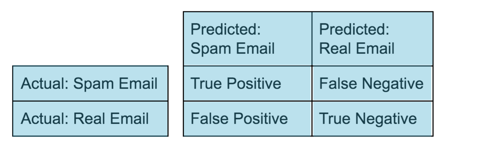
Figure 19: The confusion matrix
Accuracy can be described as follows:
\begin{equation} accuracy = \frac{tp+tn}{tp+tn+fp+fn} \end{equation}
We illustrate this method when we do the logistic regression. Although we can predict survival with KNN, it is not immediately clear what the effect is of Age and Sex. This is easier to see in logistic regression.
\newpage
4.2 The second algorithm: Logistic Regression
Another way to approach our problem is by using logistic regression (logreg for short). This is the algorithm that outputs probablities, which is exactly what we need in order to answer our main- and subquestions. We follow almost the same procedure as we did with KNN. We import the regressor from the library sklearn.linear_model. Thereafter, we split our dataset into training and test set, perform k-fold cross-validation, fit our regressor to the training set and predict on the test set. We choose 0.25 for our test size and 5 folds to split our dataset in training and test sets and print the five cross-validation scores.
from sklearn.linear_model import LogisticRegression logreg = LogisticRegression() from sklearn.model_selection import train_test_split P_titanic_train, P_titanic_test, q_titanic_train, q_titanic_test = \ train_test_split(P_titanic,q_titanic, test_size=0.25, random_state=42) from sklearn.model_selection import cross_val_score cv_scores = cross_val_score(logreg, P_titanic, q_titanic, cv=5, scoring='roc_auc') logreg.fit(P_titanic_train, q_titanic_train) ylog_pred = logreg.predict(P_titanic) print(cv_scores)
[0.86666667 0.80333333 0.74666667 0.73263889 0.92361111]
Again the performance of the model does not depend a lot on the particular fold chosen. We see that these scores of \(R^{2}\) are higher than the ones we found using KNN. This algorithm performs better than KNN for the Titanic dataset.
Here we come back to the confusion matrix to evaluate the quality of our model's prediction. We want our values on the diagonal to be as high as possible. A high number of values off the diagonal indicate problem areas. There are a lot of metrics that work with the classes in the confusion matrix in order to measure our model performance. A very popular metric for classifcation is the ROC (i.e. receiver operating characteristic) Curve and especially the area under this curve (AUC). This curve has to do with the threshold we set for our model. Using the logistic regression model, we have set our threshold at \(p=0.5\) (\(p<0.5\) indicates that the passenger has not survived and \(p>0.5\) that he has survived). So, what happens to our True Positive and False Positive rates when we vary this threshold? When \(p=0\), the model predicts 1 for all the data, which means the True Positive rate is equal to our False Positive rate which is equal to 1. When we set \(p=1\), the model predicts 0 for all the data. Both True and False Positive rates are 0. If we vary the threshold, we get a series of different True Positive and False Positive rates. The series of points we get when trying all possible thresholds are given in the plot titled 'Logistic Regression ROC Curve'.
The larger the area under the ROC Curve, the better our model is. One way to understand this, is the following. We would have a great model if we had a model which produced an ROC Curve that had a single point in the upper left corner representing a True Positive rate of 1 and a False Positive Rate of 0. The ROC Curve is in the case of Figure tab:auc, the red line. The area under this curve (the light blue square) is at it's maximum. Therefore AUC is another popular metric for classification models.
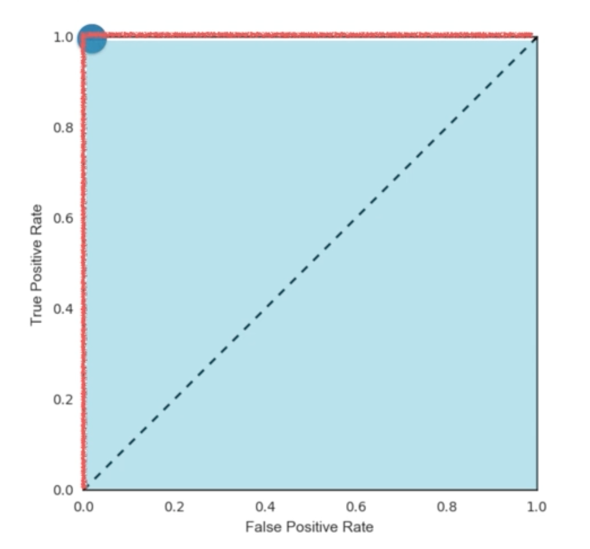
Figure 20: AUC
To compute our AUC score, we program the following code:
from sklearn.metrics import roc_curve, auc roc_auc = auc(false_positive_rate, true_positive_rate) roc_auc
0.8154761904761904
If the AUC is greater than 0.5, it means that our model is better than just random guessing.
y_pred_prob=logreg.predict_proba(P_titanic_test)[:,1] false_positive_rate, true_positive_rate, thresholds = roc_curve(q_titanic_test, y_pred_prob) plt.plot(false_positive_rate, true_positive_rate, label='LogisticRegression') plt.xlabel('False Positive Rate') plt.ylabel('True Positive Rate') plt.title('Logistic Regression ROC Curve') plt.show()
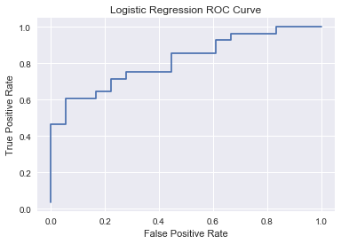
roc_auc = auc(false_positive_rate, true_positive_rate)
roc_auc
0.8154761904761904
print('Prediction{}'.format(ylog_pred))
Prediction[1 1 0 1 1 0 0 1 1 0 0 1 0 1 0 0 0 1 0 1 1 0 1 0 1 0 1 0 0 1 1 1 1 1 1 0 1 1 0 1 0 0 1 0 1 0 0 1 1 0 1 1 0 1 1 1 1 1 1 1 1 1 1 1 1 0 1 0 1 0 1 1 1 1 1 1 0 1 1 1 1 1 0 0 0 1 1 1 0 0 0 0 0 0 1 1 1 0 0 1 1 1 1 0 0 1 1 1 0 1 1 0 1 1 1 1 0 1 1 0 1 0 1 0 1 1 0 0 1 0 0 1 0 0 0 0 0 1 0 1 0 0 0 1 0 0 1 0 0 1 1 0 1 1 0 1 0 0 1 1 1 1 1 1 1 0 0 1 1 0 1 1 1 1 1 0 1 0 1 0 1 1 0]
Here we see our predictions using logistic regression. This is the prediction for a fraction of 0.25 of our dataset. If we print our coefficients we get the following.
logreg.coef_
array([[ 0.07374214, 0.00377371, -0.00684224, -2.0694906 ]])
These coefficients correspond to the four columns of P_titanic, which are Pclass, Fare, Age and male_dummy respectively (as seen in Table tab:ptitanichead). One can interpret the coefficients as follows: The higher your class, the higher your chance of survival (we call third class higher than first class). Same goes for Fare, because 0.00377371 is a positive number. We see that the coefficient corresponding to Age is negative, which indicates that the higher your age the lower your chance of surviving. In the case of male_dummy, the coefficient is negative as well which indicates that the chance of surviving decreases when male_dummy equals one.
If we take a look at the coefficient corresponding to Pclass we see something counterintuitive. The positive coefficient 0.07374214 suggests that the higher the class, the higher the chance of survival. One might expect that the chance of survival is highest when travelling first class.
This paradox is resolved once we observe that the higher the fare, the higher the chance of survival. We have seen that plotting Fare against Pclass gives us a positive correlation. The coefficient of Pclass gives the effect of class on the chance of survival with a given fare, age and gender. A higher class with the same fare does not necessarily arise because there belongs a certain value of Fare to the first class: these two variables are positively correlated. When travelling first class instead of second class, two things change: the class and the price paid for a ticket (Fare). If we want to calculate the overall chance of surviving when travelling first class, we will have to take the effect of Fare into account as well.
In order to solve this problem we will have a closer look at the dataset. We will group the mean of Fare, Age and male_dummy by the column Pclass in Table tab:tablegroupby.
P_titanic.groupby(P_titanic.Pclass).mean()
Here we calculate the effect on the chances of survival of someone travelling first, second or third class that paid the average fare
print(0.07374214*1+0.00377371*88.683228) print(0.07374214*2+0.00377371*18.444447) print(0.07374214*3+0.00377371*11.027500)
0.40840692433588 0.21708827408837 0.26284100702499996
The chance of surviving the disaster when travelling first class and having paid the average fare is 0.41. The chance of surviving the disaster when travelling second class and having paid the average fare is 0.22. In the case of travelling third class the chance of surviving is 0.26.
The fact that the variables influence each other will be discussed further in the Discussion.
For the actual chances of survival we have to multiply our coefficients with the corresponding Age, Class, Fare and Sex. After this we calculate the chance by putting these numbers in the equation of logistic regression. We have set the threshold at \(p = 0.5\), which means that if \(p < 0.5\), we will see a zero in our prediction which indicates that the passenger has not survived the disaster. To calculate the chance of survival for, for instance, the woman of 40 years old travelling first class we get:
t= 0.07374214*1+0.00377371*88.683228 - 0.0068422 * 40 -2.0694906*0
We fill in this value for \(t\) in our sigmoid function.
\begin{equation} \label{sigmoid} \sigma_t = \frac{e^{0.1347189243}}{1+e^{0.1347189243}} \end{equation}This gives us a chance of 0.53362885 \(\approx\) 0.53. This is higher than 0.5, which means that the woman of 40 years old travelling first class was likely to have survived. However, we do not need to calculate all the chances of survival for each particular passenger to find an answer to our main question and sub-questions. The logreg coefficients tell us enough about the influence of the chosen variables on the chance of surviving the disaster of the Titanic. See the following chapter Conclusion for the answer to our main question and sub-questions.
\newpage
5 Conclusion
The goal of this paper is to answer the following questions and compare the answers to the hypotheses.
Main question
Is it possible to make an accurate prediction whether the passengers on board of the Titanic survived the disaster or not using the information about gender, class and age given in the dataset?
Yes, this is indeed possible with the help of machine learning algorithms such as KNearestNeighbours and logistic regression. For our data logreg performs better than KNN. .
Sub-questions
- What is the influence of gender on the chance of surviving after the Titanic had sunk?
The coefficient of the logistic regression suggests that women had a higher chance of surviving than men.
- What is the influence of class on the chance of surviving after the Titanic had sunk?
Looking at the positive correlation between Fare and Pclass and the fact that a higher Fare increased the chance of surviving, the lower your class (1 is lower than 3), the higher your fare and therefore the higher your chance of surviving.
- What is the influence of age on the chance of surviving after the Titanic had sunk?
The higher your age, the lower your chance of survival.
We formulated the following hypotheses:
- Main question : Yes this is possible, with the help of machine learning using the algorithms KNearestNeighbours and logistic regression.
- Sub-questions :
- The survival rate of women is higher than the survival rate of men.
- The survival rate of passengers who were travelling in a higher class is higher than those travelling in a lower class.
- The survival rate of children and elderly is higher than the survival rate of the adults.
Our conclusions correspond to all of our hypotheses.
\newpage
6 Discussion
A number of factors can have an influence on our model's prediction. To begin with, the more variables we use, the better our model predicts on the training set. This is evident, because using more information given in the dataset will give the computer more details to create a fitting algorithm. The downside is that more variables can lead to overfitting. We see patterns in our training set that are not present in our whole dataset.
The emphasis of this paper was not necessarily on the precision of our algorithm but on learning the basics and getting a taste of machine learning. Because of this and because of the deadlines, the choice was made to go with the four variables Fare, Age, Gender and Class. To make the algorithm more reliable we can use more variables next time.
When we want to grade our model performance, we use classification metrics such as accuracy. In the case of accuracy there is a catch however. For instance, if we take a look at spam classification. 99% of the emails we receive is real and 1% is spam. We instantiate a classifier which classifies all emails as real. Computing the accuracy will give us a score of 99%, which is pretty high, but our classifier is horrible at predicting spam. This is less of an issue in our dataset where the sinking of the RMS Titanic killed 1502 out of the 2224 people on board, which is 68%. We can use more nuanced metrics the next time with help of the confusion matrix. The negative predictive value (NPV), for example, is another metric from the confusion matrix (see Figure tab:matrix)
\begin{equation} TNR = \frac{tn}{tn+fn} \end{equation}In the case of our horrible spam predictor, the NPV rate is zero and shows that our model is not able to classify the 1% spam. Including this metric will give us a more reliable interpretation of our model.
Furthermore, the variables influence each other (indirectly) as well. A higher fare is more likely to pair with a passenger travelling first class. Not all combinations of fare and class are in the data. We have to take this into account when interpreting the coefficients. Although, this does not affect our algorithm. An example of this was the coefficient corresponding to Pclass. It seemed counterintuitive at first that a higher class (in this case third class is higher than first class) gives a higher chance of survival, because we expected that first class would increase the chance of survival. After we found that when travelling first class instead of second class, two things change (i.e. the class and the price paid for a ticket (Fare)), we find that a higher Fare pairs with a higher chance of survival and consequently with a lower class. So indirectly lower class and a higher price paid for a ticket increases the chance of survival which makes more sense. Still, it is important to note that it is not easy to draw conclusions from the coefficients.
Finally, we have used a statistical model to explain chances of survival on board of the Titanic. We need to keep in mind that during a disaster chance, impulsivity and unexpected actions play a role. Our model will never match the exact situation during the demise of the Titanic. Furthermore, the goal is also not to make predictions about disasters and therefore making predictions about future catastrophes. The goal is that these results teach us something about the circumstances during that period. It teaches us something about the society in 1912. We can, for example, assume that the women and children first policy did work, because we have seen that the higher your age, the lower your chance of survival. Similarly, women had a higher chance of survival.
\newpage
7 Postface
Writing this paper has taught me a lot. Before I started, I did not know anything about programming or machine learning. With the help of DataCamp and my father I have experienced what it is to write code. The job prospects of programmers who know how to deal with a lot of data and machine learning algorithm are pretty good. Python is one of the easiest and most accessible languages to learn how to program. So knowing your way around machine learning is a good idea. In addition, a lot of big steps are made in the field of artificial intelligence. Big tech giants such as Netflix, Apple and Google are looking for faster and more efficient ways of making our life on the internet easier. Furthermore, there are not a lot of girls who take interest in subjects as these so I wanted to show that it is not impossible for a girl to enjoy machine learning and programming. During the presentation of my paper I want to show that programming is fun for boys and girls of our age. Lastly, writing this paper in English has given me a head start in my career, because I am sure that I will write more papers in English in the future. My plan is to get my PhD after my study at TU Eindhoven.
All in all, writing this paper was a lot of fun. I have learned a lot and I think it has been a great preparation for my education at TU Eindhoven.
8 References
\printbibliography
\newpage
\newpage
9 Appendix
9.1 Some more plots
A plot of Fare against Survived:
sns.set(style="darkgrid") ax = sns.countplot(x="Fare",hue="Survived", data=data) ax.set_xticks([])
[]
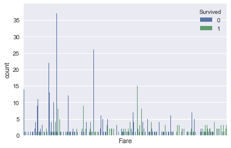
We can see that the quantity of green points increases if Fare increases. The ratio of green vs. blue increases with Fare. Which means that you were more likely to survive if you paid a higher ticket price.
\newpage
9.2 Some more cross-validation
We will now perform 10-fold cv. This way we are able to compare the results and have a look at what the influence of more folds is on our values of \(R^{2}\).
cv_scores = cross_val_score(knn, P_titanic, q_titanic, cv=10, scoring='roc_auc') print(cv_scores)
[0.37179487 0.57692308 0.55128205 0.63888889 0.36111111 0.64583333 0.54166667 0.44444444 0.52083333 0.54861111]
Our array consists of ten columns, which makes sense because we split our data in ten different ways. As in the main text, we find dat \(R^2\) is around 0.5, hence this result is robust.